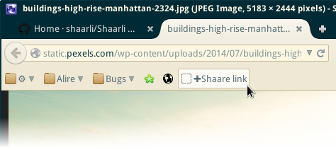

Add the sharing button (bookmarklet) to your browser
- Open your Shaarli and
Login - Click the
Toolsbutton in the top bar - Drag the
✚Shaare linkbutton, and drop it to your browser's bookmarks bar.
This bookmarklet button is compatible with Firefox, Opera, Chrome and Safari. Under Opera, you can't drag'n drop the button: You have to right-click on it and add a bookmark to your personal toolbar.

Share links using the bookmarklet
- When you are visiting a webpage you would like to share with Shaarli, click the bookmarklet you just added.
- A window opens.
- You can freely edit title, description, tags... to find it later using the text search or tag filtering.
- You will be able to edit this link later using the
 edit button.
edit button. - You can also check the “Private” box so that the link is saved but only visible to you.
- Click
Save.Voilà! Your link is now shared.
Troubleshooting: The bookmarklet doesn't work with a few website (e.g. Github.com)
Websites which enforce Content Security Policy (CSP), such as github.com, disallow usage of bookmarklets. Unfortunatly, there is nothing Shaarli can do about it.
See #196.
There is an open bug for both Firefox and Chromium:
- https://bugzilla.mozilla.org/show_bug.cgi?id=866522
- https://code.google.com/p/chromium/issues/detail?id=233903